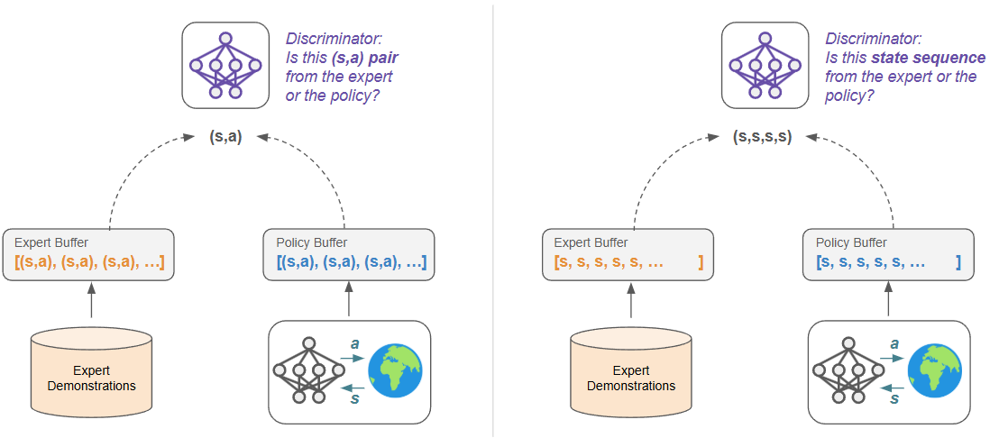
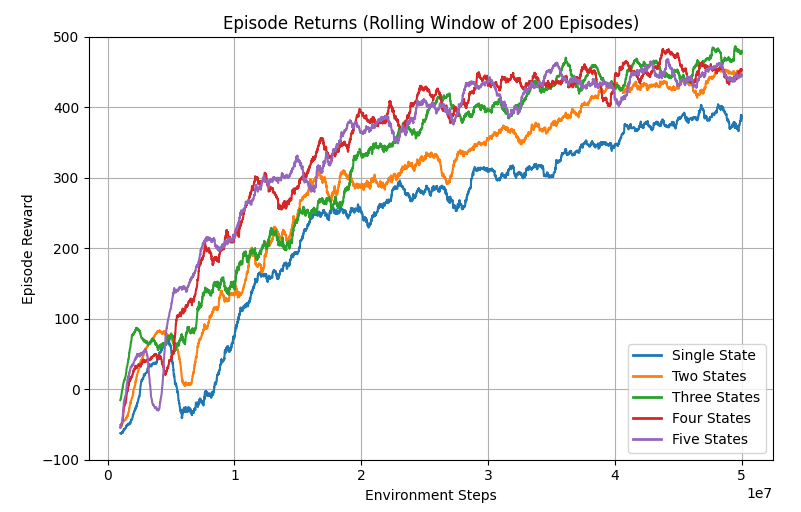
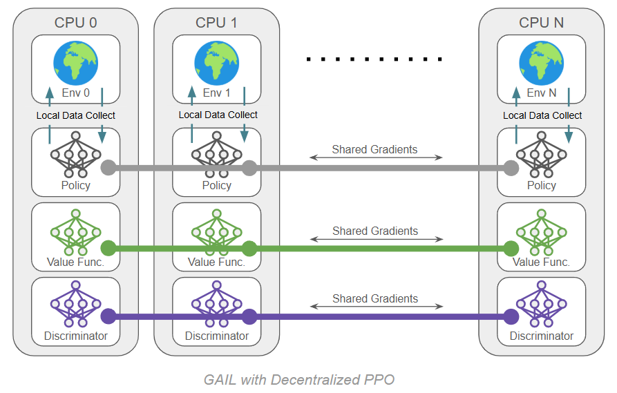
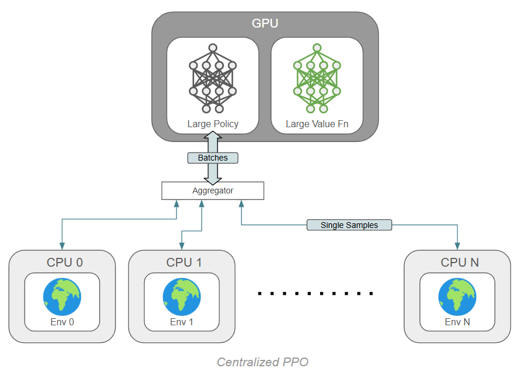
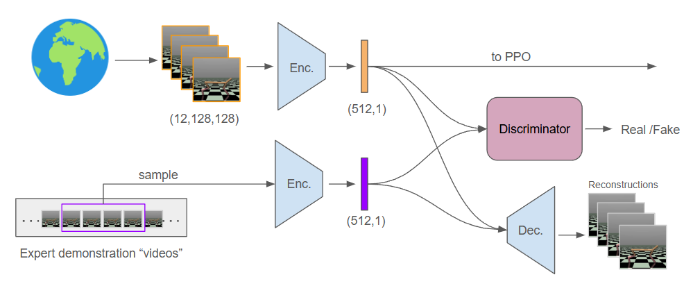
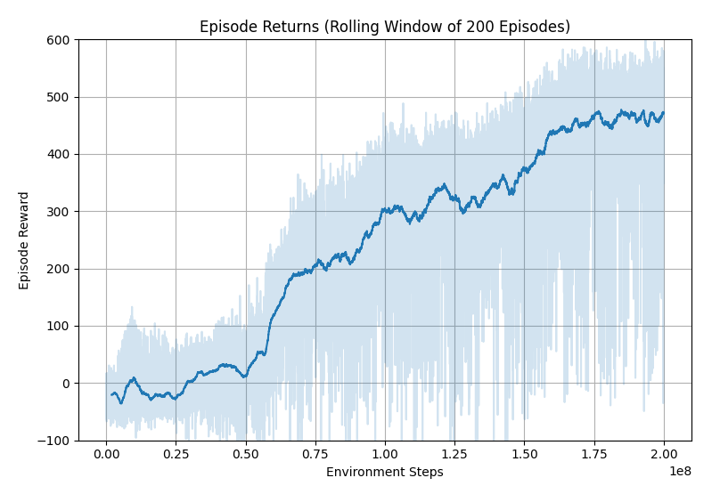

GAIL with Pixels Only
Rewarding for Visual Fidelity
GAIL with Only State Sequences
One of my key interests in investigating GAIL was to see if it could be extended to only use state information, rather than the standard (state, action) pairs. Furthermore, could these states be images instead of low-level vectors? If so, this approaches learning directly from video examples: we see sequences of images showing a desired behavior, and through RL we need to learn a policy that behaves in a visually similar way.
The first step towards this goal is altering GAIL to work without action information. If we simply move from (s,a) tuples to (s,) tuples, we are tasking our discriminator with asking the following question: to what extent is a given state reached by our expert instead of our policy?
This seems a bit restrictive and possibly degenerate: we do not want our policy to simply occupy individual states that the expert also occupies. For example, the expert and policy probably share similar initial states, and simply occupying that state is not a valid solution. Instead, we want our policy to move through sequences of states in the same way as our expert. To encourage this, I adopted a simple frame-stacking routine that bundles the four most recent states (as is common in Atari tasks).
Our discriminator now acts on , which asks of the discriminator: Is this snippet of states taken from expert trajectories or from our policy? Note that the policy and value function are still operating on individual states in this case, although this is not a requirement.

It is interesting to think about the impact of the reward being associated with a history of four states. The standard GAIL setup has a nice one-to-one correspondence between rewards and transitions: for each action you take, you get a reward that only measures the "expertness" of that one transition. However, since RL optimizes for long-term returns, there is nothing that prevents us from delaying or stretching our rewards. When we stack a history of N states together, we are assigning some reward that is a function of state for the next N transitions. In other words, we collect returns on any one state for N steps.
One approach I tried initially was to look ahead N steps rather than behind by N steps, and on further consideration this is not a good idea. While on the surface it seems similar (in either case we are running the discriminator over a sliding window of N steps), it breaks some basic assumptions about cause and effect. If we take some action in the near future that leads to a large reward or penalty, we shouldn't get credit before that action is even taken. This principle is sometimes called "reward-to-go" (https://spinningup.openai.com/en/latest/spinningup/rl_intro3.html#don-t-let-the-past-distract-you).
State Sequence Results
Before introducing pixels, we can examine how well our algorithm works with state sequences. As in the previous post, we are using experts from a SAC policy on HalfCheetah-v4. Based on the success of adding reward normalization in standard GAIL, I added that here as well. I tried stacking 1, 2, 3, 4 or 5 recent states in a sequence for the discriminator, where I expected a single state to be degenerate as described above. Actually, all settings worked fairly well, perhaps even better than most of my runs operating on (s,a) tuples:

GAIL with Only Image States
Problems began when switching to images. In the past I have used MPI to run PPO in a "decentralized" fashion, meaning that each parallel process has a complete copy of the program, including an environment instance. During updates, gradients are averaged between processes so that all copies perform a shared update. Besides this, each process is essentially running its own copy of PPO.
When we add a discriminator, we also need a copy on each process and we do a shared discriminator update. The whole thing might look something like this:

For 10 environments, we actually have 30 neural networks, but they are small MLPs and they can zip along on their own cpu core.
When we switch over to images of any appreciable size, we suddenly have 30 CNNs trying to run on the CPU all at once, and my overpriced RGB fans can only spin so fast. With some awkwardness I was able to move these to GPU memory and still share gradients via MPI, but this didn't really help: 30 CNNs do not fit on my GPU. So we need to try something else.

Fixes
I came up with two substantial changes that made this manageable. Firstly, we can use the "centralized" version of PPO, the mysterious algorithmic twin known as… PPO 2.
PPO2 is not a sequel to PPO, simply an alternative. Stemming all the way back to OpenAI's RL baselines, there have been two ways to run PPO, creatively named "ppo1" and "ppo2". PPO1 is what I have described above and used thus far, because it scales well and is really fast for small networks. I call it decentralized PPO because all processes are the same and none are acting as the master process. To run 10 environments to run 10 processes. Easy.
PPO2 is centralized and only holds networks on the master process. Parallelization and data sharing occur during the rollout instead of the update: the network operates on a batch of N states, one from each environment, and outputs N actions. These are sent to N environments housed on individual threads, and all environments step forward in parallel. The resulting states are aggregated back on the central process, and the loop repeats. During the update step, we only have one network to worry about.
The benefit of PPO2 is that the network(s) can all be on GPU and operated on batched data. For CNNs, this is substantially faster (although it is substantially slower for small MLPs!). I have since updated my PPO implementation to support either method with a flag.

The second improvement is to introduce everyone's first and favorite network, the autoencoder, to learn a common vector representation for all the other networks to enjoy. We now intercept states from the environment and immediately encode them, so that all other networks (policy, value, discriminator) operate on these latent representations. This introduces even more hyperparameters and loops into our code, but substantially cuts down on compute overhead.
For this setup I decided to add frame-stacking on the environment side, so our latent state actually represents a compressed set of four images as a single vector. The policy and value networks remain as MLPs and operate directly on these vectors. The discriminator operates on these vectors from the environment as well as latent compressions of sets of four images from the expert. It is critical to re-encode the expert data with the latest autoencoder each time we want to use it.
Here is my attempt at a diagram showing various data paths through the system. Despite all the criss-crossing arrows, this is not trained end-to-end. Various buffers capture data along the way to update an individual component.

With this change, our algorithm now has the following structure. Purple highlights were introduced in the previous post (GAIL), and green highlights show the new changes to include the autoencoder:
GAIL+PPO+Autoencoder: Repeat until converged:
Start with expert demonstration trajectories of desired behavior. Use the policy to collect data from the environment.
Store raw image states to train the autoencoder. Replace image states with their latent representation from the encoder. Replace the reward with the degree to which the discriminator predicts a given (s,a) pair is from the expert.
Use samples from the raw expert images and raw policy images to update the autoencoder. Use samples from the expert data and the policy-generated data to update the discriminator. The discriminator should classify between the two data sources.
Use the collected data to update the policy:
- The policy should predict actions proportional to how beneficial they are.
Use this data to update the value network:
- The value function should predict the expected return from each state (the experienced return).
Throw away the data: it no longer reflects the current policy's behavior.
The additions for GAIL are highlighted. These additions add a lot of hyperparameters, and we need to balance the training of PPO with the discriminator. Just as the policy and value network take on many update steps per round of data collection, we can also update the discriminator for many steps.
Results
Does it work? Yes, kind of. We now have four networks training dynamically; any change to one will impact the other three. It is a balancing act and I do not recommend it: I had many, many runs go sideways. Eventually, I found stable settings and was able to piece together some good runs. See the training curve below for the most successful run:

A few things to note: Firstly, this run is over 200M environment steps, which is 4x longer than previous experiments. With changes to PPO and using autoencoders to operate on compressed states, I was able to run at 500-600 fps, but it still takes about 4 days to perform a training run of this length. This is perhaps made worse by the frequent behavior of delayed learning progress; it often took 30M steps or more to see a convincing upward trend in reward. I would attribute this to the learning dynamics of the many networks. The discriminator and the autoencoder both need to get to a stablish place before they can really inform the policy.
For all these downsides, the final performance is actually very good. Extended training experience aside, it works as well as any other GAIL configuration I tried. Looking at the raw returns (light blue region), the best episodes are close to expert performance (around 630).
Takeaways
I was surprised by two things in these experiments: firstly, I was not expecting the image-sequence approach to be so unstable. The above plot is not representative of my typical result, which was quite poor. To comment on the other end of the performance spectrum, I left one of my runs online while I went on vacation in April, and came back to returns around negative one million.
Meanwhile, the initial experiments with low-level state sequences performed really well. Taken further, this would amount to considering entire trajectories (or large portions of them) as opposed to individual transitions, and this motivates something like a transformer-based approach which is meant for sequence processing. If available, long chains of (s,a,s,a,s,a,...) are probably the best option. It's possible that this would also fix some of the instability seen in the image-based method, but further exploration would be needed.
Recent Posts:
GAIL with Pixels Only
Rewarding for Visual Fidelity
May 16, 2025
GAIL
Rewarding for Fidelity
April 29, 2025
MuJoCo Cronenbergs
(Mis)Adventures in Style Transfer, Part 2
February 10, 2025
More Posts